Входное и выходное сопротивление
Все электронные устройства состоят из блоков, которые выполняют определенную функцию. Их иногда называют каскады, модули, узлы и т.д. Например, источник питания (рис. 1) состоит из двух блоков: в левом блоке получаем постоянное напряжение, а в правом блоке его стабилизируем (рис. 2).
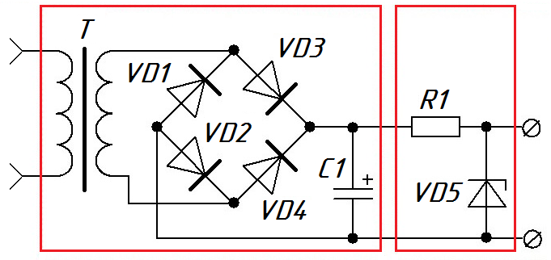
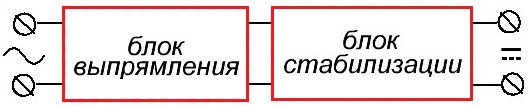
Блочная схема - это условное деление. В этом примере можно было бы взять трансформатор, как отдельный блок, который понижает переменное напряжение.
Чтобы серьезно проектировать электронные устройства, необходимо учитывать входное и выходное сопротивления.
Где же в схеме можно увидеть эти входные и выходные сопротивления? А "прячутся" они в самих блоках электронных устройств.
Входное сопротивление
В блочной схеме вход блока располагается слева, выход - справа. На вход блока будет подаваться входное напряжение Uвх от другого блока или от источника питания, а на его выходе появится напряжение Uвых. В результате этот блок будет потреблять какую-то силу тока Iвх (рис. 3)
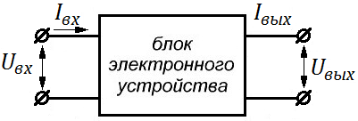
Согласно закона Ома для участка цепи
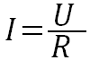
сила тока зависит от напряжения и от сопротивления. Если входное напряжение не меняется, сила входного тока в будет зависеть от сопротивления. Это сопротивдение "прячется" в самом блоке и называется входным сопротивлением Rвх. Разобрав блок, внутри мы не найдем такой резистор: он является своего рода сопротивлением элементов этого блока.
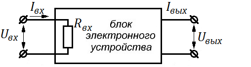
Чтобы определить входное сопротивление:
- Измерить напряжение Uвх, подаваемое на блок.
- Измерить силу тока Iвх, которую потребляет блок.
- По закону Ома найти входное сопротивление Rвх.
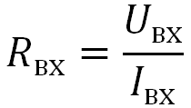
Если входное сопротивление получается очень большое, чтобы определить его как можно точнее, необходимо использовать схему на рисунке 5.
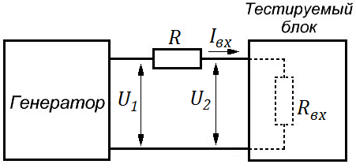
Eсли входное сопротивление большое, то сила входного тока в цепи будет очень маленькая (из закона Ома).
Падение напряжения на резисторе R
UR =U1 - U2 =RIвх
Отсюда
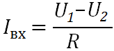
Подставляя данное выражение в формулу для Rвх получим
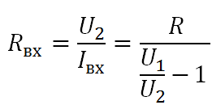
При данных измерениях напряжение на выходе генератора не должно меняться!
Рассчитаем, сопротивление резистора R, чтобы как можно точнее измерять входное сопротивление. Допустим, что входное сопротивление Rвх=1 МОм, а резистор R = 1 кОм. Пусть генератор выдает постоянное напряжение U=10 В. В результате получим цепь с двумя сопротивлениями (рис. 6). Правило делителя напряжения гласит: сумма падений напряжений на всех сопротивлениях в цепи равняется ЭДС генератора.
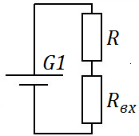
Рассчитываем силу тока в цепи:
U = IR + IRвх
U = I(R + Rвх)
I = U/(R + Rвх) = 10/(1000 + 100000) = 9,9·10-6 [A]
Получается, что падение напряжения на сопротивлении R будет:
UR =9,99·10-6·1000 = 0,00999 [В]
Такое маленькое напряжение на мультиметре невозможно точно измерить.
Отсюда вывод: для более точного измерения высокого входного сопротивления надо брать добавочное сопротивление также очень большого номинала. В этом случае работает правило шунта: на бОльшем сопротивлении падает бОльшее напряжение, и наоборот, на меньшем сопротивлении падает меньшее напряжение.
Выходное сопротивление
Пример выходного сопротивления - это закон Ома для полной цепи, в котором есть понятие "внутреннее сопротивление".
Подключим мультиметр в режиме измерения постоянного напряжения к клеммам автомобильного аккумулятора. Мультиметр показывает значение 12,1 В. При подключении лампочки к аккумулятору, напряжение на аккумуляторе становится меньше - 11,8 В.
Разница напряжения 0,3 В (12,1 - 11,8) падает на внутреннем сопротивлении r . Это и есть выходное сопротивление (сопротивление источника, эквивалентное сопротивление), которое подключено последовательно с источником ЭДС Е (рис. 7).
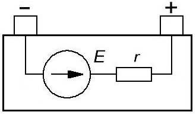
Если какой-либо источник напряжения питает нагрузку, в источнике напряжения есть ЭДС и выходное сопротивление.
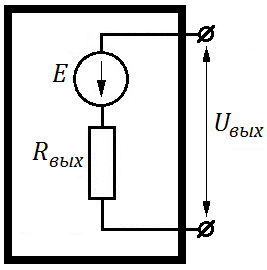
В режиме холостого хода (когда к выходным клеммам не подключена нагрузка) с помощью мультиметра можно замерить ЭДС (E).
Для измерения выходного сопротивления аккумулятора Rвых сначала измеряем напряжение на аккумуляторе без лампочки (рис. 9). Так как цепь разомкнута (нет внешней нагрузки), следовательно сила тока в цепи I равняется нулю. Значит, и падение напряжение на внутреннем резисторе Ur тоже будет равняться нулю. В результате, остается только источник ЭДС, у которого и измеряем напряжение.
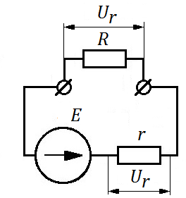
При подключении нагрузки напряжение на внутреннем сопротивлении и на нагрузке (лампочке) уменьшается. Падение напряжения на внутреннем сопротивлении составит
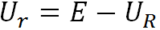
.Из закона Ома для полной цепи можно вычислить внутреннее сопротивление r:
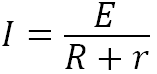
.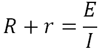
.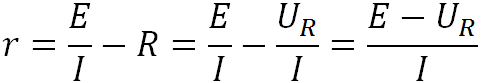
.Выводы
Входное и выходное сопротивление блоков в электронике играют очень важную роль при согласовании узлов электронных схем. Все качественные вольтметры и осциллографы также стараются делать с очень высоким входным сопротивлением, чтобы оно оказывало меньшее влияние на измеряемый сигнал.
Если подключить низкоомную нагрузку, то чем больше внутреннее сопротивление, тем больше напряжение падает на внутреннем сопротивлении. В нагрузку будет отдаваться меньшее напряжение, так как разница падает на внутреннем резисторе. Поэтому, качественные блоки питания или генераторы делают как можно с меньшим выходным сопротивлением, чтобы напряжение на выходе не уменьшалось при подключении низкоомной нагрузки.